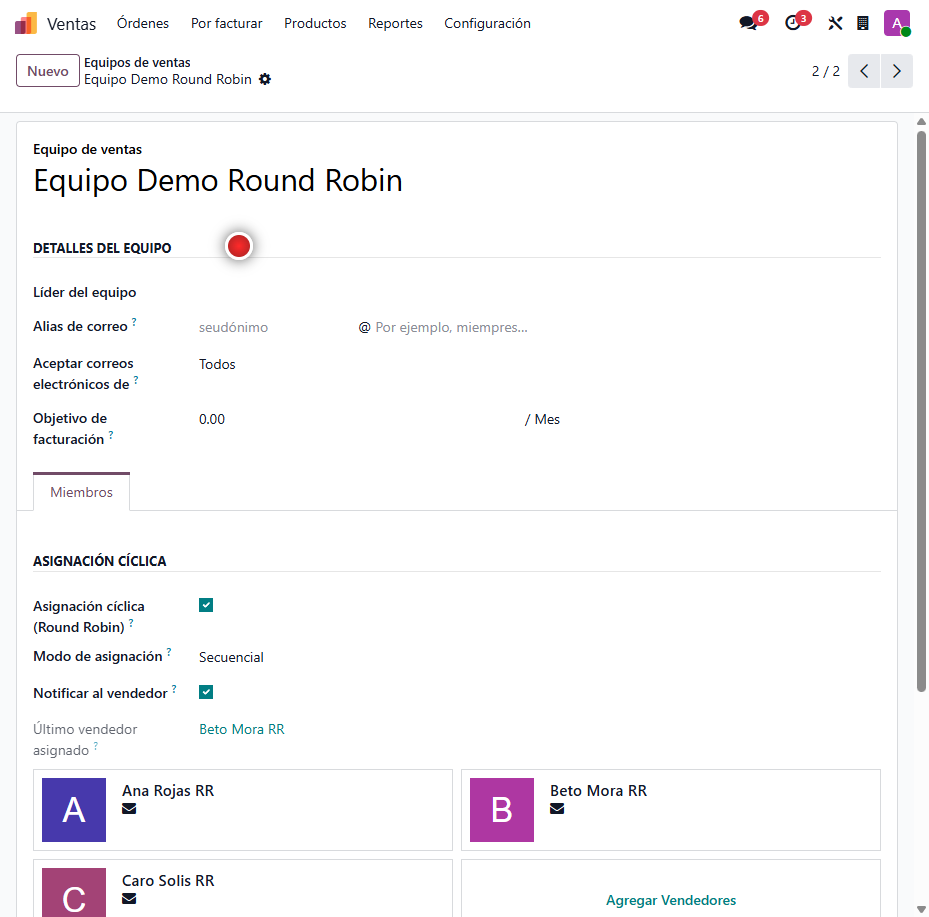
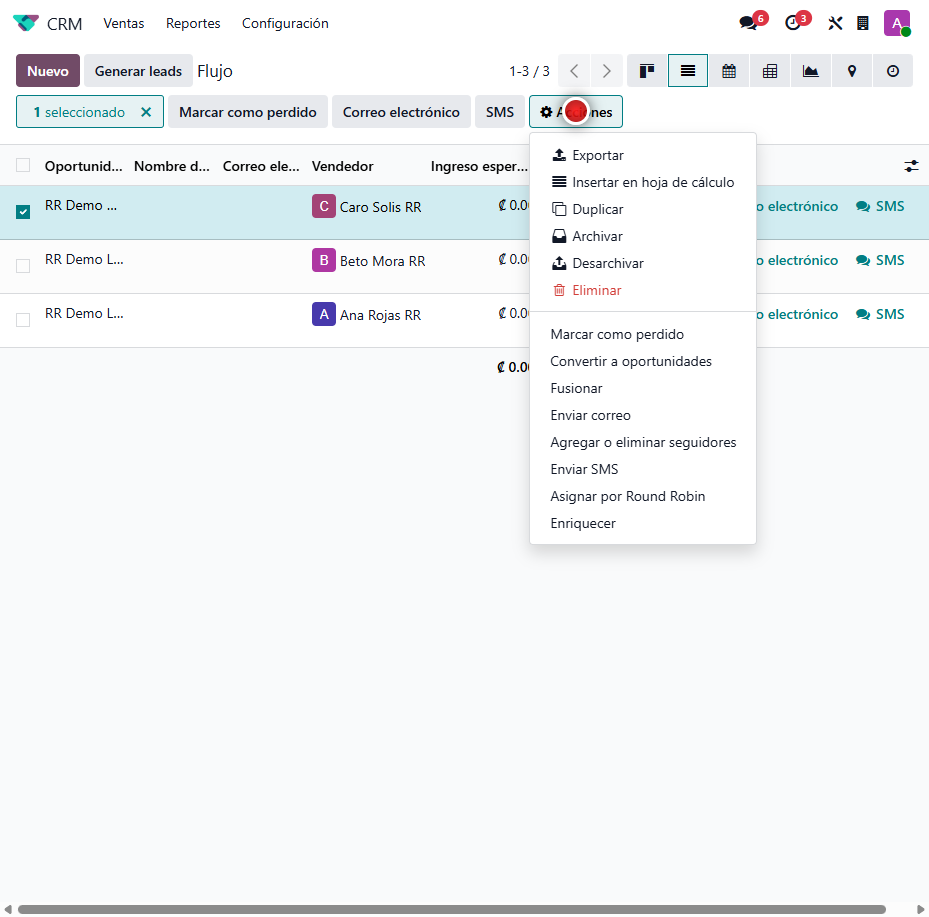
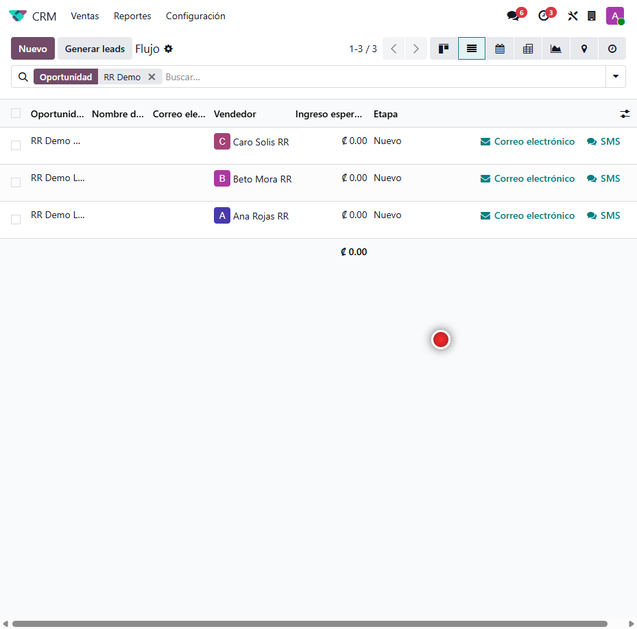

Asignación cíclica de Leads
Distribuye los leads nuevos sin vendedor entre los miembros del equipo de ventas, en rotación pareja o por carga de trabajo. Reparto justo y automático, sin reglas complejas.
Capturas del proyecto
01 / 05




Repartir leads a mano es injusto y lento
Cuando entran muchos leads, asignarlos manualmente hace que unos vendedores reciban más que otros y que las oportunidades se enfríen esperando dueño.
Este módulo asigna cada lead nuevo al siguiente vendedor del equipo en rotación —o al de menos carga—, notifica al responsable y permite redistribuir la cartera existente con un clic.
Funcionalidades clave
-
Rotación secuencial
Cada lead nuevo va al siguiente vendedor, en orden configurable.
-
Balanceo por carga
Opción de asignar al vendedor con menos leads abiertos.
-
Notificación al vendedor
Crea una actividad para el responsable al asignarle el lead.
-
Reasignación manual
Redistribuí leads existentes desde la lista con una acción.
Tecnología detrás del producto
¿Tu equipo comercial reparte leads parejo?
Adapto la asignación cíclica a la política de tu equipo de ventas.